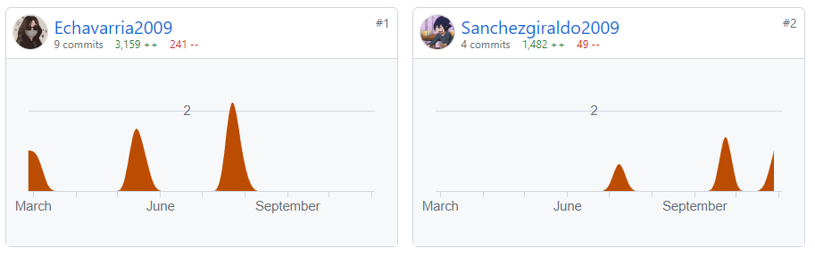

- Inicio
- Tecnología
- Sociales
- Matemáticas
- Inglés
- Religión
- Biología
- Acerca de
equipos tecnologicos visuales ¿Qué es un equipo tecnológico? Los objetos tecnológicos o artefactos tecnológicos son los dispositivos, aparatos y herramientas que el ser humano ha diseñado y desarrollado a lo largo de la historia, con el propósito de hacer frente a una necesidad. cuales existen: Pantallas interactivas. ... Impresoras multifuncionales. ... Tablets. ... Relojes inteligentes (Smartwatches) ... Impresoras 3D. ... Domótica. ... Monitores. ... Cámaras web. codigo Morse ¿Qué es y en qué consiste el código Morse? El código Morse es un medio de comunicación basado en la transmisión y recepción de mensajes empleando sonidos o rayos de luz y un alfabeto compuesto por puntos y rayas. para que nos sirve: El código Morse fue desarrollado para usar el telégrafo, un dispositivo ideado también por Samuel Morse en 1832. Era un sistema de comunicación que permite transmitir mensajes a larga distancia mediante la codificación y envío de señales, generalmente en forma de pulsos eléctricos a través de cables. como se escribe un SOS en codigo morse: ...---... codigo binario ¿Qué es un código binario? Se trata de un sistema de numeración en el que los números se representan utilizando solamente dos cifras: cero y uno. Este sistema de codificación se utiliza, entre otras muchas cosas, para representar textos o procesar instrucciones. para que nos sirve el codigo binario: En informática y telecomunicaciones, el código binario se utiliza con diversos métodos de codificación de datos, tales como cadenas de caracteres o cadenas de bits. Por su parte, el sistema binario es un sistema de numeración, una forma de realizar operaciones con ceros y unos. No necesita de otro sistema para existir. como se escribe un SOS en codigo binario: 01010011 01001111 01010011
